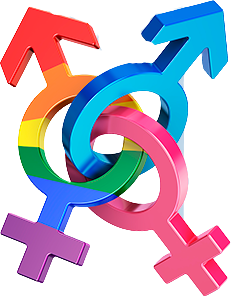

Relações de Gênero
As sociedades buscam diferentes maneiras de organizar o trabalho. Uma das mais antigas, é a divisão sexual em que as diversas tarefas produtivas são distribuídas entre homens e mulheres. As culturas interpretam de várias formas a diferença biológica entre os sexos atribuindo a eles características e papeis, disso surjem as relações de gênero